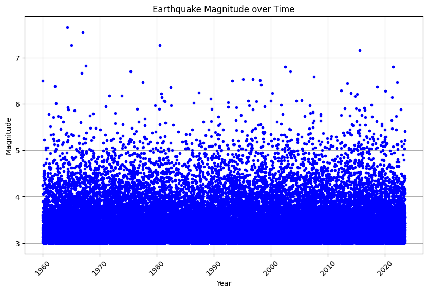
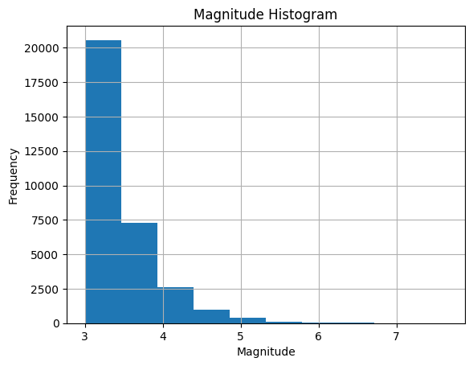
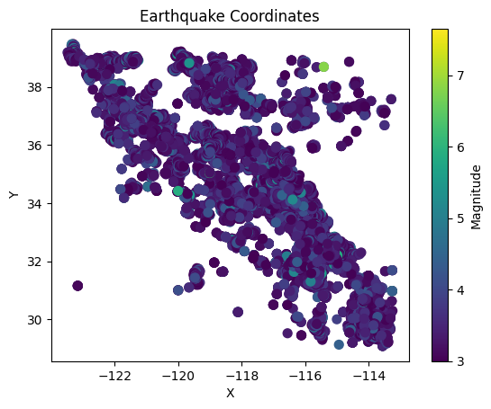

Install Dependencies#
!pip install pandas
Requirement already satisfied: pandas in c:\users\vishal\appdata\local\programs\python\python310\lib\site-packages (1.4.3)
Requirement already satisfied: python-dateutil>=2.8.1 in c:\users\vishal\appdata\local\programs\python\python310\lib\site-packages (from pandas) (2.8.2)
Requirement already satisfied: pytz>=2020.1 in c:\users\vishal\appdata\local\programs\python\python310\lib\site-packages (from pandas) (2022.1)
Requirement already satisfied: numpy>=1.21.0 in c:\users\vishal\appdata\local\programs\python\python310\lib\site-packages (from pandas) (1.23.1)
Requirement already satisfied: six>=1.5 in c:\users\vishal\appdata\local\programs\python\python310\lib\site-packages (from python-dateutil>=2.8.1->pandas) (1.16.0)
[notice] A new release of pip is available: 23.1.2 -> 23.2.1
[notice] To update, run: python.exe -m pip install --upgrade pip
!pip install matplotlib
Requirement already satisfied: matplotlib in c:\users\vishal\appdata\local\programs\python\python310\lib\site-packages (3.5.2)
Requirement already satisfied: cycler>=0.10 in c:\users\vishal\appdata\local\programs\python\python310\lib\site-packages (from matplotlib) (0.11.0)
Requirement already satisfied: fonttools>=4.22.0 in c:\users\vishal\appdata\local\programs\python\python310\lib\site-packages (from matplotlib) (4.34.4)
Requirement already satisfied: kiwisolver>=1.0.1 in c:\users\vishal\appdata\local\programs\python\python310\lib\site-packages (from matplotlib) (1.4.4)
Requirement already satisfied: numpy>=1.17 in c:\users\vishal\appdata\local\programs\python\python310\lib\site-packages (from matplotlib) (1.23.1)
Requirement already satisfied: packaging>=20.0 in c:\users\vishal\appdata\local\programs\python\python310\lib\site-packages (from matplotlib) (21.3)
Requirement already satisfied: pillow>=6.2.0 in c:\users\vishal\appdata\local\programs\python\python310\lib\site-packages (from matplotlib) (9.2.0)
Requirement already satisfied: pyparsing>=2.2.1 in c:\users\vishal\appdata\local\programs\python\python310\lib\site-packages (from matplotlib) (3.0.9)
Requirement already satisfied: python-dateutil>=2.7 in c:\users\vishal\appdata\local\programs\python\python310\lib\site-packages (from matplotlib) (2.8.2)
Requirement already satisfied: six>=1.5 in c:\users\vishal\appdata\local\programs\python\python310\lib\site-packages (from python-dateutil>=2.7->matplotlib) (1.16.0)
[notice] A new release of pip is available: 23.1.2 -> 23.2.1
[notice] To update, run: python.exe -m pip install --upgrade pip
Import Libraries#
import os
import torch
import torch.nn as nn
import pandas as pd
import matplotlib.pyplot as plt
Load and Create Dataset#
from google.colab import files
uploaded = files.upload()
csv_file = "Formatted_ETAS_Output.csv"
# Read the CSV file using Pandas
df = pd.read_csv(csv_file, sep=',', lineterminator='\n')
# # Access the data in the DataFrame
print(df.head())
---------------------------------------------------------------------------
ModuleNotFoundError Traceback (most recent call last)
Input In [4], in <cell line: 1>()
----> 1 from google.colab import files
2 uploaded = files.upload()
4 csv_file = "Formatted_ETAS_Output.csv"
ModuleNotFoundError: No module named 'google'
summary_stats = df.describe(include="all")
print(summary_stats)
Date Time Year X Y \
count 32001 32001 32001.000000 32001.00000 32001.000000
unique 19127 26803 NaN NaN NaN
top 4/26/64 0:31:11.00 NaN NaN NaN
freq 10 5 NaN NaN NaN
mean NaN NaN 1991.924790 -117.54676 34.810868
std NaN NaN 18.407271 2.11036 2.388448
min NaN NaN 1960.002196 -123.48700 29.080400
25% NaN NaN 1975.851679 -118.73330 33.343000
50% NaN NaN 1992.311728 -117.20600 34.587100
75% NaN NaN 2007.784510 -116.10520 36.820000
max NaN NaN 2023.487118 -113.24630 39.475100
Magnitude Z\r
count 32001.000000 32001.000000
unique NaN NaN
top NaN NaN
freq NaN NaN
mean 3.452693 9.615045
std 0.460765 6.170866
min 3.000000 0.000000
25% 3.130000 4.236500
50% 3.310000 9.076000
75% 3.630000 15.139700
max 7.650000 20.000000
plt.figure(figsize=(10, 6))
plt.plot(df['Year'], df['Magnitude'], 'b.')
plt.xlabel('Year')
plt.ylabel('Magnitude')
plt.title('Earthquake Magnitude over Time')
plt.xticks(rotation=45)
plt.grid(True)
plt.show(block=True)
plt.hist(df['Magnitude'], bins=10)
plt.title('Magnitude Histogram')
plt.xlabel('Magnitude')
plt.ylabel('Frequency')
plt.grid(True)
plt.show()
plt.scatter(df['X'], df['Y'], c=df['Magnitude'], cmap='viridis', s=50) # Adjust the size (s) of the points as per your preference
plt.title('Earthquake Coordinates')
plt.xlabel('X')
plt.ylabel('Y')
cbar = plt.colorbar()
cbar.set_label('Magnitude')
plt.show()



new_df = df.copy()
# Convert "Date" column to datetime in the new DataFrame
new_df["Date"] = pd.to_datetime(new_df["Date"], errors="coerce", format="%m/%d/%y")
# Adjust two-digit year values to four-digit format in the new DataFrame
new_df.loc[new_df["Date"].dt.year > pd.Timestamp.now().year, "Date"] -= pd.DateOffset(years=100)
# Extract components from the "Date" column in the new DataFrame
new_df["Day"] = new_df["Date"].dt.day
new_df["Month"] = new_df["Date"].dt.month
new_df["Year"] = new_df["Date"].dt.year
new_df["DayOfWeek"] = new_df["Date"].dt.dayofweek
new_df["Quarter"] = new_df["Date"].dt.quarter
# Convert "Time" column to datetime in the new DataFrame
new_df["Time"] = pd.to_datetime(new_df["Time"], format="%H:%M:%S.%f")
# Extract time components in the new DataFrame
new_df["Hour"] = new_df["Time"].dt.hour
new_df["Minute"] = new_df["Time"].dt.minute
new_df["Second"] = new_df["Time"].dt.second
new_df["Millisecond"] = new_df["Time"].dt.microsecond // 1000
# Drop the original "Time" column from the new DataFrame
new_df = new_df.drop("Time", axis=1)
# Drop the "Date" column from the new DataFrame
new_df = new_df.drop("Date", axis=1)
new_df.head()
| Year | X | Y | Magnitude | Z\r | Day | Month | DayOfWeek | Quarter | Hour | Minute | Second | Millisecond | |
|---|---|---|---|---|---|---|---|---|---|---|---|---|---|
| 0 | 1959 | -119.0502 | 33.9790 | 6.50 | 8.2474 | 31 | 12 | 3 | 4 | 0 | 3 | 9 | 0 |
| 1 | 1960 | -115.6222 | 33.0793 | 4.25 | 7.9322 | 2 | 1 | 5 | 1 | 0 | 8 | 49 | 0 |
| 2 | 1960 | -115.6323 | 33.1220 | 3.03 | 8.4015 | 2 | 1 | 5 | 1 | 0 | 10 | 31 | 0 |
| 3 | 1960 | -115.5851 | 33.0745 | 3.03 | 7.9678 | 2 | 1 | 5 | 1 | 0 | 10 | 32 | 0 |
| 4 | 1960 | -115.6256 | 33.0290 | 3.08 | 7.9737 | 2 | 1 | 5 | 1 | 0 | 11 | 7 | 0 |
Encoding using OrdinalEncoder#
from sklearn.preprocessing import OrdinalEncoder
thresholds = [0, 4, 5, 6, 7, 8, float('inf')]
labels = ["Minor", "Light", "Moderate", "Strong", "Major", "Great"]
new_df["Strength"] = pd.cut(new_df["Magnitude"], bins=thresholds, labels=labels, right=False)
# Extract the "category" column as a 2D array
Strength = new_df[["Strength"]].values
# Create an instance of the OrdinalEncoder
encoder = OrdinalEncoder()
# Fit and transform the categories
Encoded_Strength = encoder.fit_transform(Strength)
# Add the encoded categories to the DataFrame
new_df["Encoded_Strength"] = Encoded_Strength
print(new_df)
Year X Y Magnitude Z\r Day Month DayOfWeek \
0 1959 -119.0502 33.9790 6.50 8.2474 31 12 3
1 1960 -115.6222 33.0793 4.25 7.9322 2 1 5
2 1960 -115.6323 33.1220 3.03 8.4015 2 1 5
3 1960 -115.5851 33.0745 3.03 7.9678 2 1 5
4 1960 -115.6256 33.0290 3.08 7.9737 2 1 5
... ... ... ... ... ... ... ... ...
31996 2023 -116.5198 34.4758 3.55 18.5553 24 6 5
31997 2023 -120.5137 35.9443 3.20 18.9807 24 6 5
31998 2023 -114.1410 30.0220 3.43 18.6407 24 6 5
31999 2023 -116.3940 34.1200 5.21 18.2065 26 6 0
32000 2023 -122.7768 38.7895 3.57 17.1314 26 6 0
Quarter Hour Minute Second Millisecond Strength Encoded_Strength
0 4 0 3 9 0 Strong 4.0
1 1 0 8 49 0 Light 0.0
2 1 0 10 31 0 Minor 2.0
3 1 0 10 32 0 Minor 2.0
4 1 0 11 7 0 Minor 2.0
... ... ... ... ... ... ... ...
31996 2 11 31 22 0 Minor 2.0
31997 2 11 32 21 0 Minor 2.0
31998 2 11 33 56 0 Minor 2.0
31999 2 11 39 36 0 Moderate 3.0
32000 2 11 41 26 0 Minor 2.0
[32001 rows x 15 columns]
#Double the encode
#Use one hot encoder for the Strength
new_df["Magnitude"] = new_df["Magnitude"] * 100
new_df.head()
| Year | X | Y | Magnitude | Z\r | Day | Month | DayOfWeek | Quarter | Hour | Minute | Second | Millisecond | Strength | Encoded_Strength | |
|---|---|---|---|---|---|---|---|---|---|---|---|---|---|---|---|
| 0 | 1959 | -119.0502 | 33.9790 | 650.0 | 8.2474 | 31 | 12 | 3 | 4 | 0 | 3 | 9 | 0 | Strong | 4.0 |
| 1 | 1960 | -115.6222 | 33.0793 | 425.0 | 7.9322 | 2 | 1 | 5 | 1 | 0 | 8 | 49 | 0 | Light | 0.0 |
| 2 | 1960 | -115.6323 | 33.1220 | 303.0 | 8.4015 | 2 | 1 | 5 | 1 | 0 | 10 | 31 | 0 | Minor | 2.0 |
| 3 | 1960 | -115.5851 | 33.0745 | 303.0 | 7.9678 | 2 | 1 | 5 | 1 | 0 | 10 | 32 | 0 | Minor | 2.0 |
| 4 | 1960 | -115.6256 | 33.0290 | 308.0 | 7.9737 | 2 | 1 | 5 | 1 | 0 | 11 | 7 | 0 | Minor | 2.0 |
encoded_strength_range = new_df["Encoded_Strength"].describe()[["min", "max"]]
print(encoded_strength_range)
min 0.0
max 4.0
Name: Encoded_Strength, dtype: float64
summary_stats = new_df.describe(include="all")
print(summary_stats)
Year X Y Magnitude Z\r \
count 32001.000000 32001.00000 32001.000000 32001.000000 32001.000000
unique NaN NaN NaN NaN NaN
top NaN NaN NaN NaN NaN
freq NaN NaN NaN NaN NaN
mean 1991.422987 -117.54676 34.810868 345.269335 9.615045
std 18.406353 2.11036 2.388448 46.076527 6.170866
min 1959.000000 -123.48700 29.080400 300.000000 0.000000
25% 1975.000000 -118.73330 33.343000 313.000000 4.236500
50% 1992.000000 -117.20600 34.587100 331.000000 9.076000
75% 2007.000000 -116.10520 36.820000 363.000000 15.139700
max 2023.000000 -113.24630 39.475100 765.000000 20.000000
Day Month DayOfWeek Quarter Hour \
count 32001.000000 32001.000000 32001.000000 32001.000000 32001.000000
unique NaN NaN NaN NaN NaN
top NaN NaN NaN NaN NaN
freq NaN NaN NaN NaN NaN
mean 15.722540 6.512046 3.010437 2.505640 11.475141
std 8.783883 3.437430 1.991078 1.111548 6.900558
min 1.000000 1.000000 0.000000 1.000000 0.000000
25% 8.000000 4.000000 1.000000 2.000000 6.000000
50% 16.000000 7.000000 3.000000 3.000000 11.000000
75% 23.000000 9.000000 5.000000 3.000000 17.000000
max 31.000000 12.000000 6.000000 4.000000 23.000000
Minute Second Millisecond Strength Encoded_Strength
count 32001.000000 32001.000000 32001.0 32001 32001.000000
unique NaN NaN NaN 5 NaN
top NaN NaN NaN Minor NaN
freq NaN NaN NaN 28384 NaN
mean 29.450048 29.354583 0.0 NaN 1.815818
std 17.348968 17.252479 0.0 NaN 0.617465
min 0.000000 0.000000 0.0 NaN 0.000000
25% 14.000000 14.000000 0.0 NaN 2.000000
50% 30.000000 29.000000 0.0 NaN 2.000000
75% 44.000000 44.000000 0.0 NaN 2.000000
max 59.000000 59.000000 0.0 NaN 4.000000
Create Training and Testing Sets#
from sklearn.model_selection import train_test_split
X = new_df.drop("Magnitude", axis=1) # Features
y = new_df["Magnitude"] # Target variable
#temporarily drop column of Strength values represented as strings (Encoded_Strength still included though)
X = X.drop("Strength", axis=1)
# Split the data into training and testing sets
X_train, X_test, y_train, y_test = train_test_split(X, y, test_size=0.3, random_state=42)
print(X_train)
print(y_train)
Year X Y Z\r Day Month DayOfWeek Quarter Hour \
31932 2023 -116.3290 31.9490 18.8422 19 5 4 2 9
31187 2021 -118.1857 38.1148 4.7292 11 11 3 4 20
14148 1988 -117.5088 35.7325 1.6788 19 7 1 3 13
23611 2007 -116.2980 33.9380 18.8762 26 2 0 1 3
23500 2006 -118.1278 34.5486 14.6323 12 12 1 4 22
... ... ... ... ... ... ... ... ... ...
29802 2019 -114.2620 30.3950 8.9847 1 3 4 1 3
5390 1970 -116.5115 33.9353 9.2916 14 7 1 3 12
860 1961 -118.3985 33.4376 19.8147 19 11 6 4 21
15795 1991 -116.0270 37.0100 18.5641 6 11 2 4 20
23654 2007 -121.6790 37.3120 19.3746 1 4 6 2 5
Minute Second Millisecond Encoded_Strength
31932 9 15 0 2.0
31187 43 48 0 0.0
14148 12 14 0 0.0
23611 47 3 0 2.0
23500 47 34 0 2.0
... ... ... ... ...
29802 59 15 0 2.0
5390 53 12 0 2.0
860 14 56 0 2.0
15795 23 44 0 2.0
23654 59 47 0 3.0
[22400 rows x 13 columns]
31932 321.0
31187 440.0
14148 423.0
23611 307.0
23500 351.0
...
29802 324.0
5390 305.0
860 314.0
15795 329.0
23654 513.0
Name: Magnitude, Length: 22400, dtype: float64
Create and Train Model#
Note:
This may take several minutes
This is a temporary model that is a Multi Layered Perceptron. We plan to switch to a Convolutional Neural Network soon.
from sklearn.neural_network import MLPRegressor
#Notes for Hyperparameter tuning: increase max iters to much larger number. Test learning rate. Experiment with Batch size
clf = MLPRegressor(random_state=1, max_iter=500).fit(X_train, y_train)
train_acc = clf.score(X_train, y_train)
val_acc = clf.score(X_test, y_test)
print("CNN training set accuracy = {}".format(train_acc))
print("CNN validation set accuracy = {}".format(val_acc))
CNN training set accuracy = 0.63815051226697
CNN validation set accuracy = 0.6524063836696402
Create Convolutional Neural Network (use when converting to PyTorch)#
# #Build a Convoluted Neural Network
# class SurrogateCNN(nn.Module):
# def __init__(self):
# super(SurrogateCNN, self).__init__()
# # Convolutional layers
# self.conv1 = nn.Conv2d(3, 16, kernel_size=3, stride=1, padding=1)
# self.relu1 = nn.ReLU()
# self.pool1 = nn.MaxPool2d(kernel_size=2, stride=2)
# self.conv2 = nn.Conv2d(16, 32, kernel_size=3, stride=1, padding=1)
# self.relu2 = nn.ReLU()
# self.pool2 = nn.MaxPool2d(kernel_size=2, stride=2)
# # Fully connected layers
# self.flatten = nn.Flatten()
# self.fc1 = nn.Linear(32 * 8 * 8, 128)
# self.relu3 = nn.ReLU()
# self.fc2 = nn.Linear(128, 10) # Adjust the number of output classes as needed
# def forward(self, x):
# x = self.pool1(self.relu1(self.conv1(x)))
# x = self.pool2(self.relu2(self.conv2(x)))
# x = self.flatten(x)
# x = self.relu3(self.fc1(x))
# x = self.fc2(x)
# return x
Load Training Set (use when converting to PyTorch)#
# from torch.utils.data import Dataset, DataLoader
# import pandas as pd
# #Change to fit our dataset
# # Read data, convert to NumPy arrays
# data = pd.read_csv("sonar.csv", header=None)
# X = data.iloc[:, 0:60].values
# y = data.iloc[:, 60].values
# # convert into PyTorch tensors
# X = torch.tensor(X, dtype=torch.float32)
# y = torch.tensor(y, dtype=torch.float32).reshape(-1, 1)
# # create DataLoader, then take one batch
# loader = DataLoader(list(zip(X,y)), shuffle=True, batch_size=16)
# for X_batch, y_batch in loader:
# print(X_batch, y_batch)
# break
Train Data (use when converting to PyTorch)#
# import torch.optim as optim
# # Instantiate the SurrogateCNN model
# model = SurrogateCNN()
# # Define the loss function
# criterion = nn.CrossEntropyLoss()
# # Define the optimizer
# optimizer = optim.Adam(model.parameters(), lr=0.001)
# # Prepare your training data
# train_loader = torch.utils.data.DataLoader(train_dataset, batch_size=64, shuffle=True)
# # Set the number of training epochs
# num_epochs = 10
# # Training loop
# for epoch in range(num_epochs):
# running_loss = 0.0
# for inputs, labels in train_loader:
# # Zero the gradients
# optimizer.zero_grad()
# # Forward pass
# outputs = model(inputs)
# # Compute the loss
# loss = criterion(outputs, labels)
# # Backward pass and optimization
# loss.backward()
# optimizer.step()
# # Update the running loss
# running_loss += loss.item()
# # Print the average loss for the epoch
# epoch_loss = running_loss / len(train_loader)
# print(f"Epoch {epoch+1}/{num_epochs} - Loss: {epoch_loss:.4f}")
# # Save the trained model
# torch.save(model.state_dict(), "surrogate_cnn_model.pth")
---------------------------------------------------------------------------
NameError Traceback (most recent call last)
<ipython-input-13-5ac56a40d0fe> in <cell line: 13>()
11
12 # Prepare your training data
---> 13 train_loader = torch.utils.data.DataLoader(train_dataset, batch_size=64, shuffle=True)
14
15 # Set the number of training epochs
NameError: name 'train_dataset' is not defined